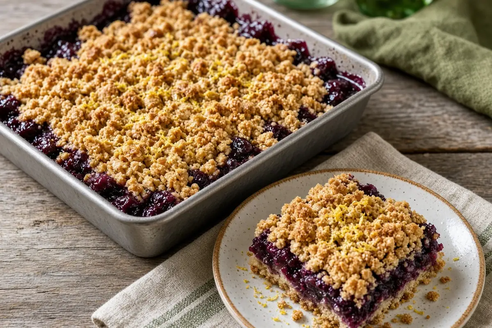

Blueberry Crumble
Blueberries cooked down with lemon juice and zest on the stove, then baked under a buttery brown sugar oat streusel in an 8-inch square pan.

8 servings
By
Yield: 8 servings
Prep:
Cook:
Total: (includes 30 minutes cooling)
Difficulty: Easy
Ingredients
Blueberry filling
- 5 cups blueberries, fresh or frozen
- 1/2 cup granulated sugar
- 3 Tbsp cornstarch
- 2 Tbsp lemon juice
- 1 tsp lemon zest
- 1/8 tsp kosher salt
Oat streusel
- 1 cup all-purpose flour
- 3/4 cup old-fashioned rolled oats
- 2/3 cup packed light brown sugar
- 1/2 tsp ground cinnamon
- 1/4 tsp kosher salt
- 1/2 cup (1 stick) cold unsalted butter, cubed
Instructions
- Heat the oven to 375°F with a rack in the middle. Butter an 8-inch square baking pan or set out an 8-inch square foil pan on a sheet pan, about 5 minutes.
- Make the streusel: in a bowl, whisk the flour, oats, brown sugar, cinnamon, and salt. Work in the cold butter with your fingertips until it forms clumps the size of peas, about 5 minutes. Refrigerate it while you cook the filling.
- In a large saucepan, stir together the blueberries, granulated sugar, cornstarch, lemon juice, lemon zest, and salt, about 5 minutes.
- Cook over medium heat, stirring often, until the juices bubble and turn thick and glossy, 5 minutes. Take the pan off the heat.
- Spread the filling in the prepared pan. Scatter the streusel evenly over the top, pressing a few clumps together for big crumbs, about 5 minutes.
- Bake at 375°F until the filling bubbles at the edges and the streusel is deep golden, about 40 minutes. If the top browns too fast, lay foil loosely over it near the end.
- Cool on a rack at least 30 minutes so the filling sets before serving.
Notes: Frozen blueberries work well: use 5 cups straight from the freezer, without thawing, and cook 3 minutes longer until the juices thicken. Bakery sale: cool the crumble completely, about 2 hours, before covering it, then keep it covered at room temperature and sell it within 1 to 2 days of baking. Sell it plain, with no ice cream, whipped cream, or cream topping; at home, a scoop of vanilla ice cream on a warm serving is fine. Contains wheat and milk.